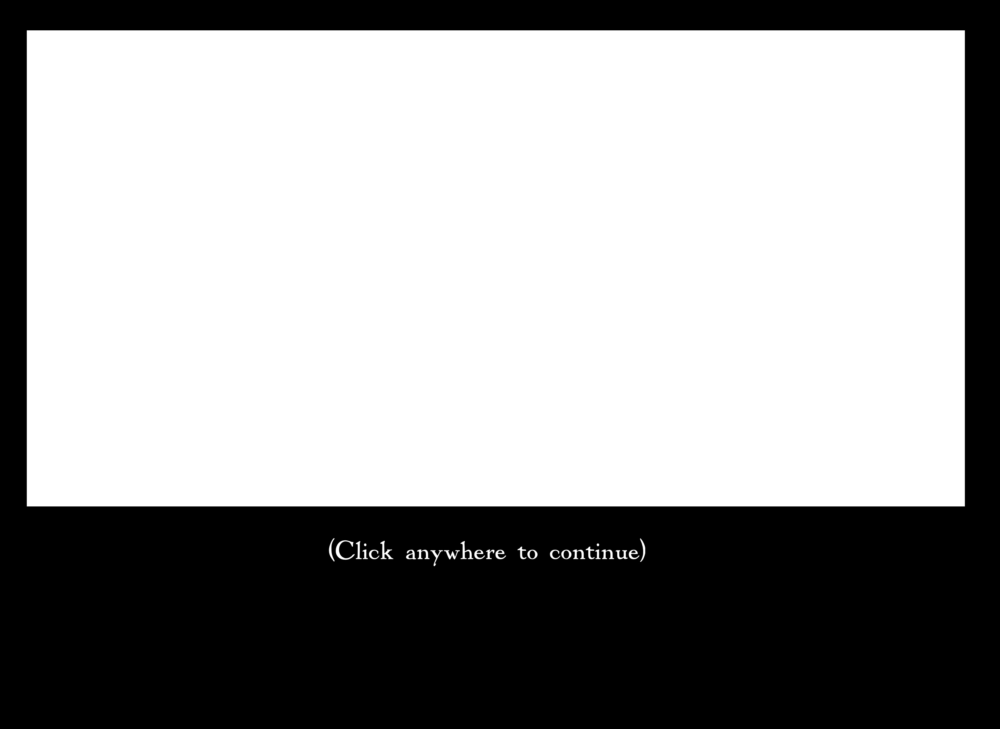
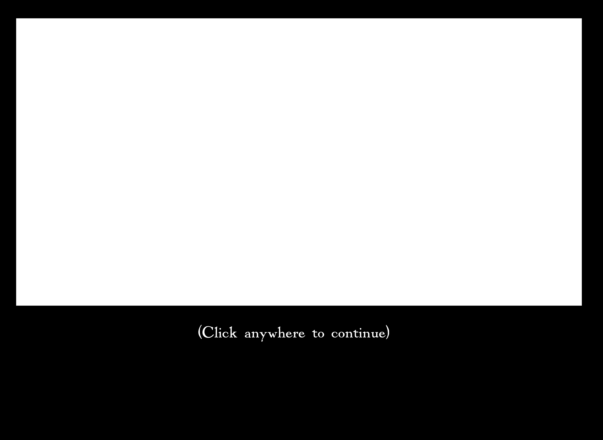

The morning that grabs ahold of you and slaps you awake is a warm,
sunlit morning with obstreperous blue jays racketing from outside
the open window.
It is your open window, presumably, although really you have no clue.
That's strange. You'd think you'd have some idea as to who's window this is, or as to
whether or not it was you or someone else who left it half open during the night.
Seeing as you are now waking, you presume that you slept, and, at some point
before that, went to bed. But you don't recall doing any of that. In fact, you
have utterly no memory of anything at all before the moment you heard the blue jay.
You continue to lay in bed, immobilized by the tranquil
feeling of the morning. That soft morning feeling is familiar. Nothing else is.
You let a slight smile onto your face. What a curious mystery!
You feel no urgency to solve it, but you must admit that you're intrigued.
How could you know what a blue jay is and not know your own name?

![A chess board with the pieces in a strange position. From left to right, top to bottom, they are: a blank space, a white bishop, space, black pawn, space, black pawn, space, white rook, white pawn, black pawn, white pawn, space, space, black bishop, black knight, space, white pawn, space, space, black knight, space, white pawn, white pawn, space, space, white knight, black bishop, space, black pawn, space, space, white pawn, white pawn, space, white pawn, black pawn. The rest of the tiles are empty.](moonreflectedwater.png)
 
